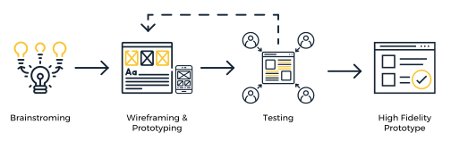
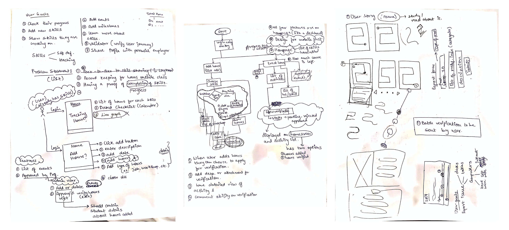
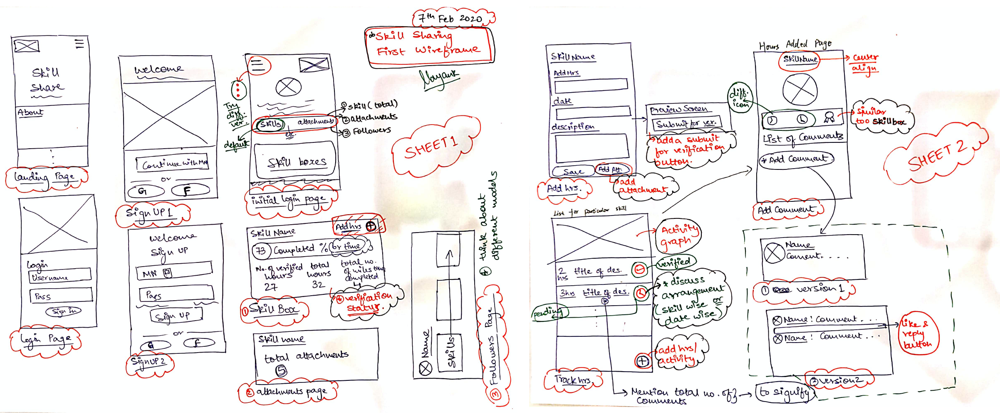
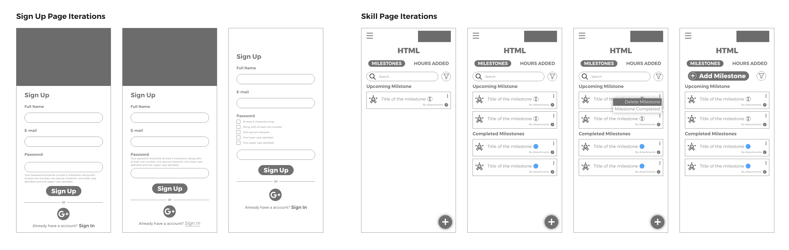
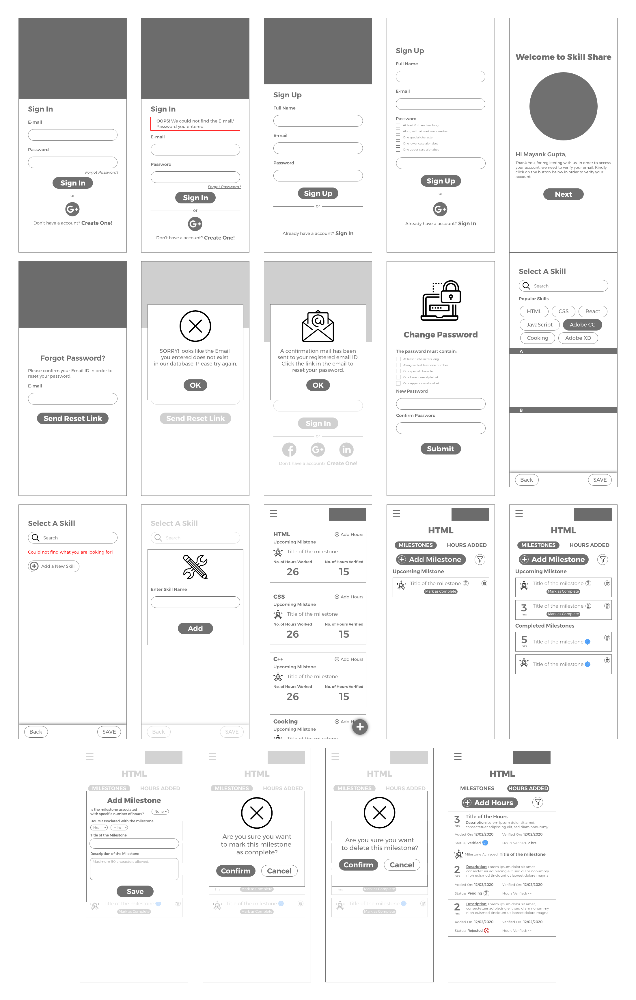
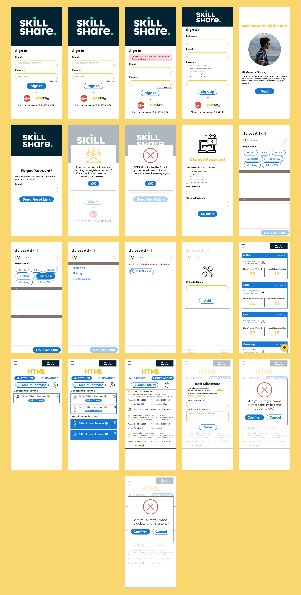

Designing the UI for a minimum viable product that lets students archive hours spent learning skills and find peers for knowledge exchange — turning informal learning into a structured, social experience.
Pratt Beta Space needed a platform that would allow students to track hours spent learning skills outside the classroom and enable peer-to-peer knowledge exchange. The goal was to design the UI for an MVP — just enough to begin initial user testing and validate the core concept before development.
The challenge was addressing a diverse student audience while keeping the experience seamless for everyone, from design students to engineers to architects.
My primary contribution was designing the low and high fidelity screens across all flows. I also actively participated in brainstorming and researching features for the MVP alongside a product developer and product manager.

The first step was to determine the user flow and identify the unique screens required for the MVP. We began by defining primary user goals, then mapped various flow iterations with a student persona in mind. This helped us establish screen priority before any design work began.

Before the design phase could begin, we each sketched basic wireframes independently and then converged to discuss ideas. Individual sketching before group review produced richer divergence and better raw material to synthesize.
To move faster, we divided screens and worked on them individually while following a shared style guide — ensuring consistency without requiring constant synchronization.

We explored three different approaches for handling password requirements on the registration screen — a detail that significantly affects perceived trust and friction at the most critical moment of onboarding.


The final high-fidelity prototypes covered the core MVP flows: login, registration, skill adding, and hours tracking. The designs hit the intended goal — clear, focused, and ready for initial user testing to validate the core concept.

The MVP scope was intentionally tight — login, registration, skill adding, and hours tracking. Staying focused on what needed validation first prevented the common trap of designing beyond what could realistically be tested.
— Project reflectionI transitioned off the project when app development began and the visual design phase was underway — a natural handoff point in the MVP lifecycle. The experience of working closely with a developer and product manager revealed how design decisions ripple into engineering constraints in ways that aren't visible when working within a design team alone.